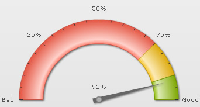
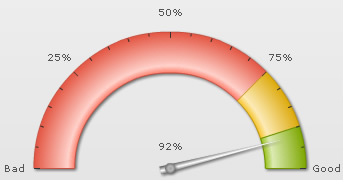
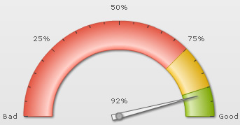
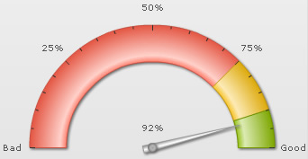
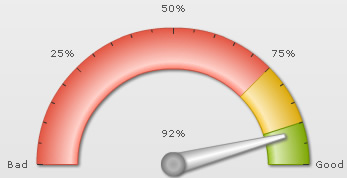
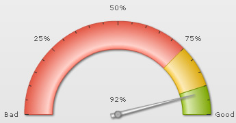
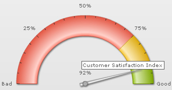
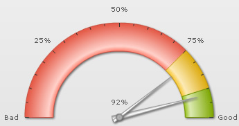

| Configuring Dials |
Here, we'll see how to configure various aspects of the dials. Specifically, we'll see how to:
Let's see each of them one by one. |
| Configuring background and border of dial |
You can opt to have the dial fill in single color or as a gradient. To fill the dial using a single color, you can use: |
|
Here we've specified the dial background color as 666666 and hidden the border using borderAlpha='0'. This will result in: |
|  |
You can also fill the dial with a gradient by specifying the list of colors separated by comma. Each color will then form an equal part of gradient. Example: |
|
This will result in: |
|  |
You can configure to show/hide the dial border using: |
|
Here, we've set border alpha to 0 to hide it. Additionally, you can configure border properties as under: |
|
This will result in: |
|  |
| Configuring radius of dial |
You can make the length of dial longer/shorter by specifying its exact radius in pixels as under: |
|
This will result in: |
|  |
| Configuring base width, top width and rear extension |
You can configure the base and top width of dials using: |
|
This will result in the image below (we've also increased pivot radius here). As you can see, the thickness of both the base and top part of dial has increased. |
|  |
You can opt for the dial to have a rear extension (i.e., extension on the opposite side) using: |
|
This will result in: |
|  |
| Adding custom tool text for dial |
You can add custom tool text for each dial using: |
|
This will result in: |
|  |
| Adding multiple dials |
You can add any number of dials to each chart, with each dial having its own value and individual properties as under: |
<dials> "dials": {
"dial": [
{
"value": "92",
"rearextension": "10",
"basewidth": "8",
"tooltext": "Current year"
},
{
"value": "79",
"bgcolor": "FFFFFF",
"bordercolor": "999999",
"basewidth": "4",
"tooltext": "Previous year",
"rearextension": "10",
"showvalue": "0",
"radius": "95"
}
]
} |
| This will result in: |
|  |
| The visual stacking order of each dial will depend on its order in the XML document. That is, the dial defined first in the XML/JSON will appear at the bottom of the dial stack. |